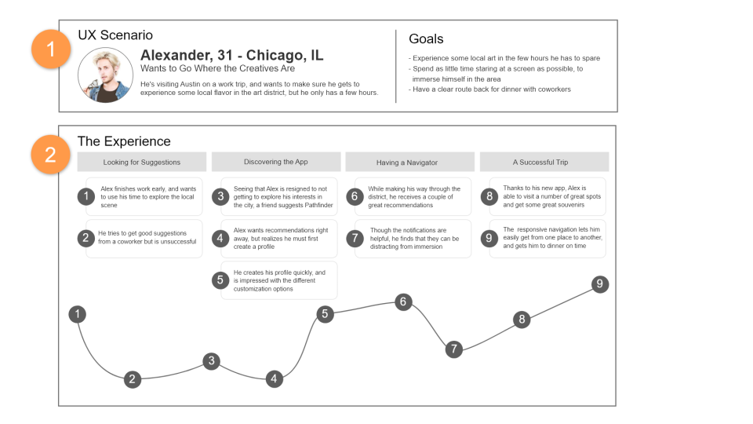

UX Design Project: Mobile Prototype

User Research
Background
What do travelers do when the plan falls through - or there isn't one?
Whether due to a lack of planning or a change in plans, travelers often find themselves with free time that they'd like to make good use of. I would like to determine what frustrations result from wasted time whiel traveling and how we could help alleivate those frustrations.
Goals
How can we bring traveler's interests to them?
The goal of this study was to determine how users find things to do when they are already at their travel destination, and use that research to develop an app to present travel activities on the fly, resulting in more satisfying vacation time.
Proto Persona
We started by creating a proto persona synthesized from our hypotheses about what users would be looking for during their travels. We expected that the initial step of planning out trip activities would be a primary concern for our users.
User Interviews
Methodology: User interviws were contacted in person to collect and synthesize qualitative data from participants. The interviews were conducted over the course of one week, and were used to inform the creation of affinity diagrams, empathy maps, and user personas.
Participants: The ideal participants for this study were people who travel with purpose, and/or those who seek out activities uniue to their interests while traveling. This sort of participant helped us understand how to address presenting activities that may be narrow in scop or held to unique standards, and by what metrics activities may be related.
Inerview Questions:
- Could you describe your typical week?
- How do you spend free time at home?
- How often do you find the time to travel?
- What do you like to do when you travel?
- How much research do you do when planning for a trip?
- What sites do you use to help you plan?
- How do you find things to do when you're there?
- How do you feel about time spend driving around while you're on vacation?
- Could you tell me about a time you had to change your plans? How did you determine what to do instead?
- Can you describe a time you stumbled across something while traveling that you didn't plan for?
- Describe one of your favorite vacations.
- What makes a travel experience bad for you?
- How often do you leave and read reviews about your experiences?
- What regrets do you have after a vacation is over?
Key Findings
After the inverviews were completed, we determined some key findings that held true across most users.
- Participants have periods of free time on a vacation that they attempt to use well.
- They want their vacation to be immersive and adventurous.
- They look for unique or local experiences, often while traveling on foot or bike.
- THey are drawn to locations primarily by recommendation and visuals (such as architecture, other attendees, and billboards).
Affinity Diagram
Skills Used
- Persona Creation
- User Interviews
- Affinity Diagrams
- Empathy Maps
- User Scenarios
- Journeymaps
- User Flow Diagrams
- Wireframing
- UI Design
- UX Writing
- Data Synthesis
- Data Visualization
- Google Material
- Adobe XD
Team
Ryan K McKinney, UX Designer
03/27/2021
March 18-26, User Research Plan
March 27-April 3, Definition and Ideation
April 4-10, Prototyping
April 11-16, Testing and Iterating
Definition & Ideation
User Persona
User Insight Statement
Olivia, a cultured and adventurous traveler, needs an easy way to discoer extraordinary experiences as she explores her wherabouts, because stopping to search and plan on her mobile device pulls her out of the immersion she looks for in a vacation.
In our field study, we discovered that a majority of individuals simultaneously seek out unique experiences and immersion in their travel destinations. These two goals often work against one another, as taking the time to search out or plan tehse experiences can be time consuming and unsuccessful.
Therefore, we believe that we may be able to help these travelers by creating an app which understands the circumstances they are looking for and provides suggestions and navigation to those experiences as they explore.
Problem Statement
When travelers have to stop what they are doing to search and plan for experiences, it disrupts the sense of immersion they enjoy on their vacations.
These interruptions not only cost valuable time, but are also frequently unsuccessful at providing the unique circumstances travelers are looking for.
Empathy Map
Using the affinity diagram and proto persona, an empathy map was synthesized in order to better understand users' key behaviors, pain points and gain poiints. Some key findings include:
- "I want to experience things the way locals do."
- "I don't like waiting to decide on what to do."
- Spends a lot of time walking and wandering.
- Is happier when experiencing something new or different to what they usually do.
- Dislikes not being able to find something to do that fits in with their aesthetic.
- Likes being able to easily see photos and other visuals before deciding to visit a location.
Value Proposition Canvas
A value proposition canvas was synthesized using Persona pain and gain points, and the Prioritization Matrix. Some key user benefits include:
- Provides a central location to help users find experiences tailored to them.
- Takes the work out of searching and planning.
- Provides adaptive navigation that updates according to additions in the user's route.
User Scenario
Using another Persona, Alexander, we demonstrated how a user might interact with our product. Key interactions include:
- Alex is on a work trip and has some time to explore.
- He has specific things he'd like to do in town, but did little research of the area before arriving.
- He has dinner reservations later in the evening, so in addition to exploring he needs to stay on schedule.
User Journey Map
Prototyping
Competitor Analysis
Only one competitor had an option to view all places of interest by keyword(s). None automatically pulled interests from profile data or saved common keywords. While all provide routes to itinerary activities or search results, none allowed the user to easily re-route by moving items around in their itinerary.
Onboarding User Flow
Sketches
Sketches were created for the profile creation process, in order to quickly ideate and iterate experiences to implement in clickable prototyping.
Digital Wireframes
Using the sketches for reference, wireframes were built to give a cleaner look at how the product would be structured.
Clickable Prototype
Iterating off of the digital wireframes, clickability was introduced in order to provide an illustration of how the user flow will function, and to help establish interactive UI patterns.
Testing
User Tests
In order to iterate on the prototype, guerilla user tests were conducted to check for issues in navigation, process flow, and content. Additionally, I sought opportunities to inquire about what could be added to existing functionality to generally improve the experience.
Tests were conducted online, through Zoom. Participants were given control of the screen to navigate through the application.
Five participants were selected, based on criteria in the User Testing Plan. All of their feedback was documented, for futher analysis once testing was concluded. Of the five participants, two agreed to have the test recorded for deeper analysis.
Guerilla Testing Plan
Objective: To determine what navigational, functional, and aesthetic changes should be made to the prototype, prior to iteration. Our goal was to have learned ways to improve upon the navigational flow and overall user experience of onboarding a user.
Target Users:
- Adults, aged 20-45
- Familiar with mobile technology such as google maps and social media
- Somewhat to very frequent travelers
Questions to be Answered:
- How long does the average user take to sign up?
- What navigational issues should be corrected to improve the experience?
- Do users undrstand the purpose of UI elements and overall app functionality?
Tasks Given:
- Sign up for a Wayfinder account using your email address.
- Participate in the walkthrough/tutorial process once an account has been created.
- Complete a user profile.
Key Learning from User Tests
Analyzing comments and findings from the user tests, we created a 2x2 matrix and found some key areas in both positive feedback and things to improve upon. Findings of note:
- Participants really enjoyed the "Persona" feature, but some were unclear on the benefit of selecting onw.
- While participants saw value in the visual nature of infinite scroll when adding interests, a number of users recommended a search bar.
- Users were able to navigate the onboarding process with ease, but additional text or text changes should be made to improve clarity.
Conclusion
Android Prototype
Using analysis from the user testing, the prototype was iterated to include changes to navigation and text. To provide a higher fidelity prototype, Google's Material Design system was used to inform the design.
Final Thoughts
Over the course of this case study, I learned a great deal about my own preconceptions about what users want, and hwo users interact with products. Though some things from my original hypothesis carried through the length of the study, I was often surprised by what I overlooked or took for granted.
While interviewing, testing and iterating, I found a better way to distance my personal opinions and tastes from the task of designing something centered on the user. To put it bluntly, I am more practiced in acting as a translator and mediator between user and product, rather than an authority.
I learned a great deal about how details matter, especially in regards to clear communication. I discovered just how helpful it is to slow down and consider how users will not understand something just because I do. Moving forward, I intend to reflect more on my design decisions and seek feedback and critique wherever possible.